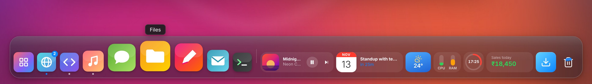
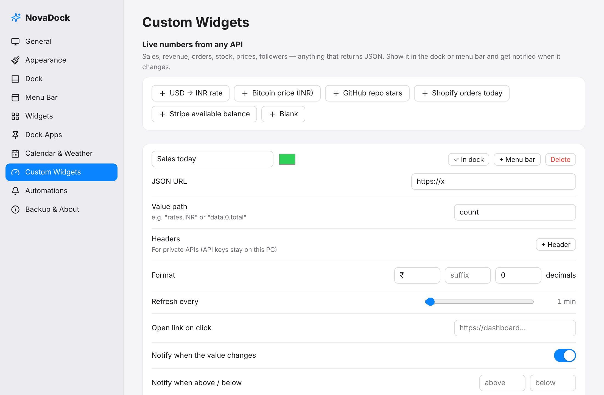

A dock that feels alive
Icons grow under your cursor, open apps get a dot, and windows group per app. Pin anything: apps, folders, files or websites. Drag it onto the dock and it stays.

Live demo, not a video. Hover over the dock, click the widgets, switch themes. Open full screen →
A Mac-style dock, a clean menu bar and live widgets for your calendar, music, weather, system and your own business numbers. All in one glassy bar.
Free download · Pro is a one-time $5.50 · No account needed
Meetings, music, weather, CPU and your sales are always one look away. Click any widget for the full view.
The active app's name, power and lock menu, Control Center, and any widgets you like, in any order.
You get a reminder before each meeting and your music pauses itself. Low-battery and high-CPU alerts. Alerts wait while you focus.
Quit NovaDock and your Windows taskbar comes back exactly as it was. Fullscreen videos and games hide the dock on their own.
You can change icon size, spacing, magnification, position and layout. The tint, blur, border, corners, fonts and accent colour are yours too. Back it all up to one file.
16 built-in widgets, plus unlimited custom ones. Each sits in the dock or the menu bar and opens a full panel when you click it.
Google, Outlook and iCloud. See what’s next and get a reminder before it starts.
Album art and controls for any music or video app.
Current conditions and a 5-day forecast. No API key needed.
Focus mode, dock hiding, appearance, volume, lock and sleep.
Pomodoro sessions with breaks, and alerts held while you work.
Sales, orders, prices: any JSON API, with a history sparkline.
Also included: Clock · World Clock · Battery · System Monitor · To-do · Notes · Downloads · Recycle Bin · Launchpad · Show Desktop · Focus mode
Any API that returns JSON becomes a live tile: today's orders, Stripe balance, currency rates, crypto prices, followers. Pick a value and a refresh time. NovaDock tells you when the number moves.

Real Acrylic and Mica blur from Windows, or a custom-drawn glass look with any corner radius. Put the dock at the bottom, left, right or top, as a floating pill or a full-width bar.
Watch today’s orders and revenue tick up while you work. No dashboard tab needed.
CPU, RAM, GitHub stars and a focus timer in one bar, with a launcher one shortcut away.
Next meeting, Stripe balance and key numbers in one glance.
Pomodoro, to-dos and notes without opening another app.
Your layout, notes, to-dos and keys never leave your computer.
No sign-up and no telemetry. NovaDock has no server to send your data to.
Weather, calendars and your APIs talk straight to their own services.
Every download includes a 7-day Pro trial. No card needed.
Windows 10 & 11 · 64-bit · Secure checkout · Taxes handled for you · 14-day refund
It replaces the Windows taskbar with a Mac-style dock at the bottom and a menu bar at the top. Both can hold live widgets: calendar, music, weather, system stats, focus timer and your own custom numbers. Click any widget to open a full panel.
Yes, on 64-bit Windows 10 and Windows 11. On Windows 10 the Mica effect falls back to Acrylic blur.
You choose: hidden, auto-hide or always visible. When you quit NovaDock, the taskbar and your screen space go back exactly as they were. If something ever goes wrong, run "NovaDock.exe --restore-taskbar".
Paste your calendar’s secret iCal link in Settings, under Calendar & Weather. It is read-only, and NovaDock fetches it directly from your PC. Nothing goes through our servers.
No. NovaDock is free to download. Pro is a one-time $5.50 payment that you keep forever, with free updates. Every download starts with a 7-day Pro trial.
Yes. Choose bottom, left, right or top, as a floating pill or a full-width bar, with auto-hide if you want it out of the way.
NovaDock is a native Tauri app: a small installer and a light memory footprint. Fullscreen games and videos hide the dock automatically.
No. There is no account and no telemetry. Your settings, notes and API keys stay in your own AppData folder.
Set up in under a minute. Quit any time, and the taskbar comes right back.
Download free · Pro $5.50